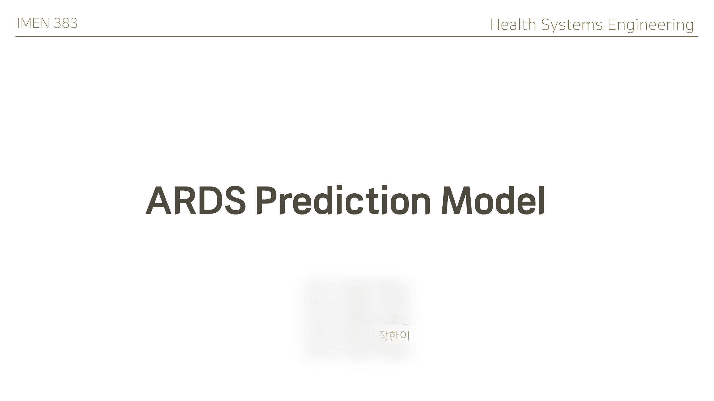
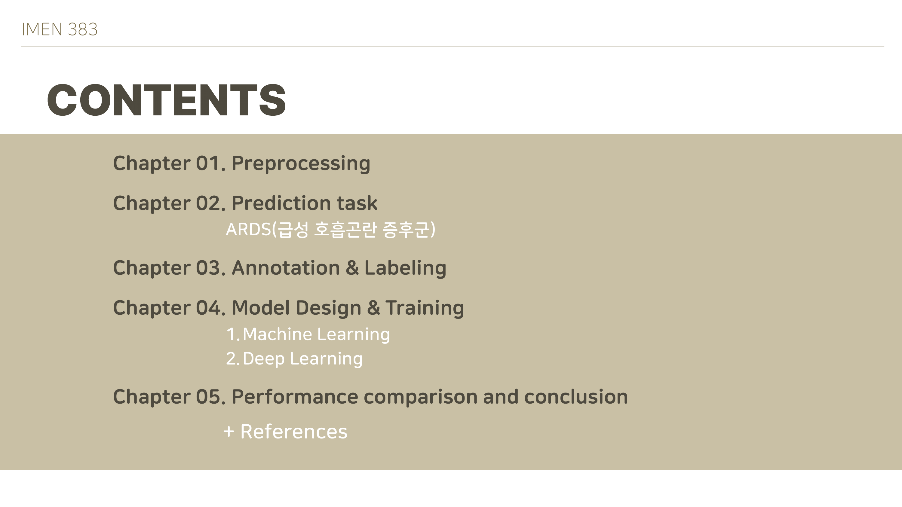
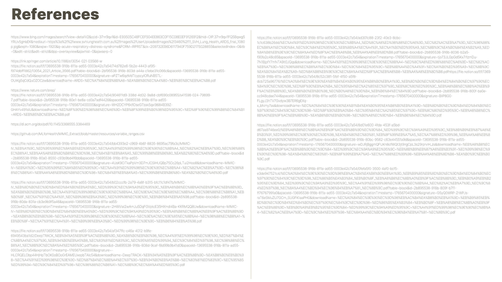

IMEN 383 · Health Systems Engineering
ARDS
Prediction Model
ICU 시계열 데이터를 기반으로 ARDS 발생을 12시간 전에 예측하는 머신러닝·딥러닝 프로젝트

Overview
의료 시계열 데이터에서
12시간 뒤 위험을
읽어내는 과정
데이터 정제부터 임상 기준을 반영한 라벨링, ML·DL 모델 비교, 성능 해석까지 하나의 흐름으로 구성했습니다.

Preprocessing
분석 가능한
ICU 시계열 만들기
11,514명의 코호트를 정의하고, 이상치와 결측치를 임상·도메인 기준에 맞춰 정제합니다.
Prediction Task
무엇을,
왜 예측할 것인가
ARDS의 임상적 의미와 예측 필요성을 정리하고, Berlin Criteria를 데이터셋에서 사용할 수 있는 수치 조건으로 변환합니다.
Annotation & Labeling
미래를 예측하는
라벨 만들기
현재 시점에서 향후 12시간 내 ARDS 조건 충족 여부를 라벨링하고, 미래 정보가 학습에 새어 들어가지 않도록 데이터를 정리합니다.
Model Design & Training
정적 모델과
시계열 모델 비교
6개 머신러닝 모델과 LSTM·Transformer를 동일한 데이터 분할과 정규화 흐름에서 비교합니다.
XGB · LGB · RF
DT · LR · NB
Train/Valid/Test split → 변수 제외 → Min-Max scaling → 학습
LSTM
Transformer
동일 전처리 후 Tensor 변환을 거쳐 시계열 패턴 학습
Performance & Conclusion
성능 비교와 임상적 의미
프로젝트 결과에서는 LSTM이 가장 높은 F1-Score를, Transformer가 가장 높은 ROC-AUC를 기록했습니다.
발표자료의 성능 비교 결과 기준
시계열 바이오신호에서
ARDS 위험을
더 일찍 포착하기
코호트 선정 · 임상기준 라벨링 · 시계열 모델링 · ML/DL 성능 비교를 하나의 파이프라인으로 구현한 프로젝트입니다.
References 보기 +
